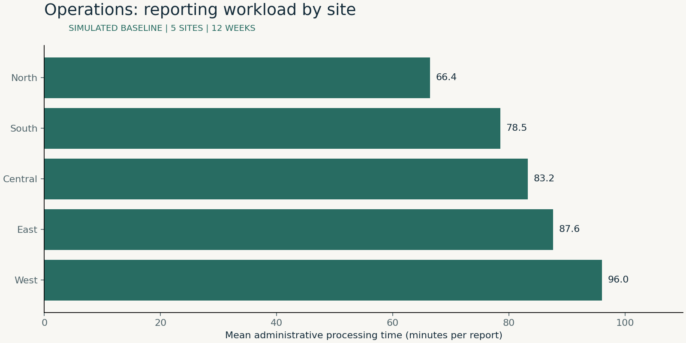

PROJECT 01A · OPERATIONS
Operational Reporting & Process Improvement
I analysed 60 simulated reports from five sites over 12 weeks and designed a standard workflow for collecting, validating and summarising the data.
← PROJECT 01 · BOTH CASE STUDIES
Executive summary
I analysed reporting across five sites over 12 weeks and designed a standard workflow for collecting, validating and summarising the data.
On-time reporting fell from 100% in Week 11 to 40% in Week 12. Average processing time fell from 83.0 to 79.2 minutes per report. These measures capture different aspects of performance and do not establish a causal relationship.
All results describe the simulated baseline. The redesigned workflow and performance targets are proposals; no implemented improvements or post-change benefits have been measured.
Key areas and tools
- Focus
- Business operations, process mapping, KPI analysis, risk and quality control, stakeholder communication, and recommendations.
- Tools
- Google Sheets, an Excel workbook export, formulas, conditional formatting, KPI charts, process mapping and AI-assisted drafting with human review.
01The challenge
In this simulated case study, a company with five operating sites relies on independently prepared Excel reports, manual data consolidation and repeated communication between site managers and central management.
The existing process creates potential inefficiencies, including inconsistent reporting formats, duplicated administrative work, delayed submissions and limited visibility over operational performance.
Project objective: Design a more efficient and scalable reporting process that improves data consistency, reduces manual administration and provides management with actionable operational insights.
02Approach
The project follows a structured business process improvement framework:
Process assessment
Map the existing reporting workflow and identify potential bottlenecks and sources of inefficiency.
KPI development
Define measurable performance indicators to evaluate reporting accuracy, timeliness and operational effectiveness.
Data analysis
Develop and analyse a simulated operational dataset covering five business locations.
Workflow redesign
Propose a standardised reporting system supported by Excel-based validation and dashboard reporting.
AI integration
Explore how AI-assisted workflows can support performance summaries, exception reporting and routine management communication.
Evaluation
Assess potential efficiency gains, implementation challenges and operational risks.
03Tools
Google Sheets — Data Analysis & Reporting
I used spreadsheet formulas, KPI calculations, conditional formatting and data visualisations to evaluate reporting accuracy, punctuality, administrative efficiency and operational issue management.
Process Mapping & Workflow Design
Mapped the existing reporting process, identified potential inefficiencies and designed an improved workflow incorporating standardised submissions, automated data validation, centralised consolidation and management oversight.
AI-Assisted Reporting
Designed an AI-supported reporting process in which validated operational metrics can be used to produce draft management summaries and highlight exceptions requiring further investigation. The proposed workflow maintains human oversight over data verification, interpretation and final recommendations.
Performance Measurement
Established baseline operational indicators and proposed measurable performance targets to evaluate the potential effectiveness of reporting improvements.
04Analysis
A centralised Google Sheets dashboard was developed to compare site-level performance, monitor weekly trends and identify operational inefficiencies.
The dashboard includes three visualisations:
Administrative Processing Time by Site: Comparison of reporting workloads across five locations.
Weekly Administrative Processing Time: Analysis of fluctuations in reporting preparation and consolidation time.
Weekly On-Time Reporting Rate: Assessment of reporting punctuality and performance consistency over time.
AI-Assisted Reporting Demonstration
To explore the practical application of AI in operational reporting, I tested an AI-assisted management summary using simulated performance data from Week 12.
The AI-generated draft was reviewed against the underlying dataset to verify numerical accuracy, distinguish observed findings from possible causes and assess the relevance of proposed management actions.
Key Exception
South, Central and West submitted reports late. These delays may reduce the availability of timely operational information, potentially limiting management's ability to identify and respond to emerging performance issues. The underlying causes remain unverified.
Recommended Actions
- Investigate late submissions at the three affected sites to identify scheduling, coordination or workflow issues.
- Monitor late submissions each week. Track submission deadlines and processing times separately to spot recurring issues.
05Key findings
1. Reporting Timeliness: South
South recorded an on-time submission rate of 58.3%, compared with the overall company average of 75%. This represents a negative performance gap of 16.7 percentage points.
Five of South's twelve weekly submissions were late, making reporting punctuality a priority for further investigation. Potential contributing factors include submission scheduling, staff capacity and approval procedures.
2. Administrative Efficiency: West
West recorded the highest average processing time at 96 minutes per report, approximately 16.5% above the company average of 82.4 minutes.
Across twelve reporting cycles, this represents approximately 2.7 additional administrative hours compared with processing at the company-average rate.
This suggests an opportunity to investigate whether repetitive tasks, manual consolidation or inconsistent reporting processes contribute to the additional workload.
3. Reporting Consistency
On-time reporting reached 100% in Weeks 10 and 11 before declining to 40% in Week 12.
Meanwhile, average administrative processing time decreased from 89.6 minutes in Week 1 to 79.2 minutes in Week 12, a reduction of approximately 11.6%.
These results indicate that lower processing times do not necessarily guarantee more punctual submissions. Both performance indicators should therefore be monitored independently.
4. Data Validation
North, South and East each recorded two failed validation checks across twelve submissions, equivalent to a 16.7% failure rate per site.
This highlights opportunities to standardise input requirements and introduce preventative validation controls.
These findings identify potential operational weaknesses rather than confirmed underlying causes.
06Recommendations
Based on the baseline analysis, four operational improvements are proposed.
1. Standardise Reporting Procedures
Introduce a shared reporting template across all five sites, supported by mandatory fields, standardised KPI definitions and consistent submission deadlines.
This would reduce variation in reporting practices and provide a more reliable basis for performance comparisons.
2. Introduce Automated Data Validation
Implement spreadsheet validation rules to identify missing information, invalid values and inconsistent submissions before data consolidation.
This would help reduce the need for manual corrections and improve the reliability of management reporting.
3. Centralise Operational Performance Monitoring
Consolidate validated submissions into a structured dataset connected to a central KPI dashboard.
Management could monitor site-level performance, identify reporting exceptions and compare progress against established operational targets.
4. Integrate AI-Assisted Management Reporting
Introduce AI-assisted summaries using validated and anonymised operational metrics.
AI could support the drafting of management updates and identification of unusual performance movements, while managers retain responsibility for verification, investigation and approval.
These targets represent proposed operational objectives, not achieved improvements.
Effectiveness should be assessed through a comparable post-implementation reporting period, with performance measured against the same KPI definitions.
07What I learned
By developing a multi-site reporting dataset and KPI dashboard, I gained practical experience in organising information, comparing performance across locations and identifying areas that warrant further investigation.
The analysis highlighted the importance of distinguishing between different operational problems. For example, reporting punctuality and administrative efficiency do not necessarily move together, meaning they may require different management interventions.
Designing the improved reporting workflow also reinforced the importance of data standardisation and validation before introducing more advanced automation.
Finally, exploring AI-supported reporting demonstrated how emerging technologies can support routine business communication while maintaining human oversight, data protection and accountability.
PROJECT EVIDENCE
Explore the original workbook
Download the Google Sheets workbook exported to Excel, including the simulated inputs, KPI calculations, process design and findings. The chart below is a new static rendering of its Dashboard values.

